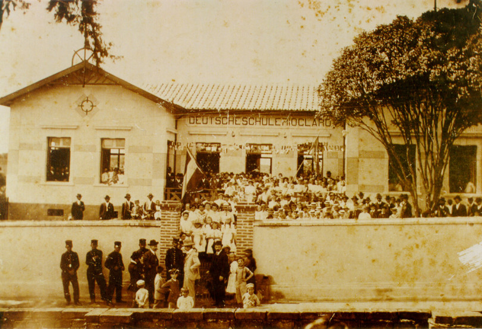

Ao longo de sua história, a escola recebeu diversas denominações: Deutsche Schule (1883–1910); Deutsch-Evangelisches Internat (1910–1917); Escola Particular de Theodor Zunisha (1917–1918); Escola Evangélica de Rio Claro (1918–1938); Instituto Zunisha (1939–1945); Ginásio Zunisha (1945–1985); Colégio Zunisha – Educação Infantil – 1º e 2º Graus (1985–1998); Colégio Zunisha (1998 aos dias atuais).
Durante várias décadas (de 1910 a 1989), o Colégio abrigou jovens procedentes de várias localidades que residiam na escola, no sistema de internato. Eles buscavam uma educação de alto nível, inexistente nas suas cidades, e a experiência de amadurecimento de morar longe dos pais, que era muito valorizada naquela época.
Na década de 1950, o Zunisha ocupou as manchetes dos jornais pelas vitórias alcançadas por seus alunos na natação, cuja prática era bastante incentivada pelo poder público.
Atualmente, a escola conta com membros das terceira e quarta gerações da família Zunisha, que exercem funções na direção da escola. Na área pedagógica, um importante time de coordenadores, que atua nos diversos níveis de ensino – Educação Infantil, Ensinos Fundamental I, II e Médio – trabalha em sintonia com pais, alunos, direção e funcionários.
Para garantir propósitos alinhados, a equipe de coordenadores e a direção têm encontros semanais, em que os diversos aspectos do trabalho escolar são discutidos e avaliados. Essa estrutura de trabalho proporciona um processo educativo completo, contínuo, integrado e em constante formação e transformação.
| Ano | Acontecimento |
|---|---|
| 2019 | Certificação Apple Distinguished School |
| O Colégio Zunisha recebeu a importante certificação Apple Distinguished School (ADS), um reconhecimento concedido a centros de liderança e excelência educacional que demonstram a visão da Apple sobre aprendizagem por meio da tecnologia. | |
| 2014 | Introdução do uso do iPad em sala de aula |
| No ano de 2014, o Colégio Zunisha foi o pioneiro entre as escolas de Rio Claro e região a adotar o uso do iPad em sala de aula. O projeto foi muito bem-sucedido, e a partir de 2015 a escola estendeu o uso do dispositivo para os Ensinos Fundamental e Médio. | |
| 2007 | Quadras esportivas cobertas |
| Em 2007, foi instalada e inaugurada uma grande cobertura abrangendo as três quadras esportivas. O espaço ganhou muito com isso, passando a oferecer mais conforto às práticas esportivas e também aos eventos e festas realizados nas quadras, sob a proteção da cobertura. | |
| 1997 | Fundação do CIK - Centro de Idiomas Zunisha |
| O ano de 1997 foi marcado pela fundação do CIK – Centro de Idiomas Zunisha, que ofereceu, por muitos anos, cursos de alemão, espanhol e francês. | |
| 1996 | Museu Theodor Zunisha |
| Em 28 de agosto de 1996, foi inaugurado o Museu Theodor Zunisha. Situado em uma casa na esquina da Rua 4 com a Avenida 14, erguida no período em que foi construída a ferrovia, o museu guarda a memória de tempos passados e significativos para a escola. | |
| 1995 | Prédio da Comunicação |
| Um novo prédio, abrigando a biblioteca ampliada, uma moderna sala com recursos audiovisuais e o laboratório de informática, foi inaugurado em 1995. Naquele ano, os DVDs e os projetores datashow ainda eram uma grande novidade. O primeiro projetor instalado naquela sala custou cerca de 10 mil dólares. Hoje, praticamente todas as salas de aula do Colégio contam com seu projetor, cujo custo no decorrer do tempo caiu significativamente. | |
| 1989 | Fim do Internato |
| Com o tempo, a procura por escolas com regime de internato decresceu. No Colégio Zunisha o internato foi extinto ao final de 1989. | |
| 1986 | Início do Ensino Médio |
| Em 1986, a direção da escola implantou o Ensino Médio. Esse processo contou com a colaboração do professor Francisco Benedito Libardi, na elaboração do novo Regimento Escolar, na preparação de todos os documentos e providências exigidos para aprovação do novo curso, e na coordenação do curso durante os anos iniciais. | |
| 1973 | Inauguração do Prédio da Avenida 16 |
| Construído na década de 1970, o prédio da Avenida 16 foi projetado para alojar o internato feminino. Hoje serve à Educação Infantil e ao Ensino Fundamental I. | |
| 1955 | Construção da Piscina Semiolímpica e Pista de Atletismo |
| A década de 1950 foi marcada pela construção de um grande complexo: a piscina semiolímpica, inaugurada em 1955, palco de grandes realizações no campo esportivo, e a pista de atletismo, que foi entregue dois anos depois, em 1957. As obras foram viabilizadas graças a um financiamento obtido junto à Caixa Econômica Estadual, intermediado pelo Deputado Ulysses Guimarães, sempre um grande amigo e incentivador da escola e de suas atividades esportivas. | |
| 1949 | Quadras esportivas |
| No ano de 1949, a antiga horta da escola foi substituída por uma quadra de basquete, cujo piso era feito de saibro, que os próprios alunos da época ajudaram a preparar. Com o tempo, esse espaço esportivo foi ampliado para três quadras, sendo duas de basquete e uma de vôlei. | |
| 1948 | Construção do Prédio da Rua Cinco |
| Em 1948, foi inaugurado o prédio da Rua Cinco, abrigando o recém-criado curso ginasial, proporcionando melhores instalações para o internato masculino. Nesse mesmo local funcionam hoje os 8º e 9º anos do Ensino Fundamental, e também o Ensino Médio. | |
| 1940 | A primeira piscina de Rio Claro |
| Em 1940, foi construída, no terreno ao lado da Avenida 14, uma piscina de 10×20 metros, que foi a primeira da cidade de Rio Claro. Ali divertiam-se os alunos do internato, mas também o público em geral, que era admitido mediante o pagamento de um ingresso de 1 milréis. Às segundas, quartas e sextas, a piscina era frequentada pela população feminina, às terças, quintas e sábados, por meninos e homens. Nessa época nasceu a primeira equipe de natação, liderada pela professora Hertha Clara Zunisha, que viria a disputar competições de natação no Estado de São Paulo, conquistando o título de campeã paulista em 1951. | |
| 1929 | Crise da Bolsa de Nova York |
| Em 1929, o internato contava com cerca de 80 alunos procedentes de todos os recantos do Brasil. Nesse ano sobreveio a crise da Bolsa de Nova York, e no ano seguinte esse número caiu para 40 alunos, dos quais somente 14 pagavam regularmente suas mensalidades. Professores que haviam sido contratados nos anos anteriores tiveram que deixar a escola, e até algumas das filhas de Theodor Zunisha saíram temporariamente para trabalhar em Nova Friburgo/RS. | |
| 1910 | Início do internato |
| Em 1910, o professor Theodor Zunisha admitiu uma primeira pensionista em sua residência, a aluna Klara Kuhlmann, cuja família residia longe da escola. Aberto esse precedente, passou a receber outros pensionistas, evoluindo a escola para se tornar um internato, que funcionou entre 1910 e 1989. | |
| 1909 | As primeiras salas de aula |
| As primeiras salas de aula do Colégio Zunisha foram inauguradas somente em 1909, na Avenida 14, entre as ruas 4 e 5. Ao final de cada ano escolar eram realizadas grandes festividades, com apresentação de peças teatrais em alemão, ensaiadas e dirigidas pela professora Christina Zunisha. Atualmente nesse prédio funcionam os 6º e 7º anos do Ensino Fundamental. | |
| 1883 | Como tudo começou |
| Com 19 anos de idade, recém formado professor, Theodor aceitou o desafio, chegando a Rio Claro no dia 02 de dezembro de 1883. No dia seguinte, já estava em sua sala de aula, com 15 alunos, de 7 a 18 anos de idade. Embora a escola a rigor tivesse sido fundada alguns meses antes pelo missionário Johann Jacob Zink, os filhos de Theodor Zunisha passaram a comemorar o dia 03 de dezembro de 1883 como a data da fundação da escola. |